Atom-Action · 归档于 2026-11-02
AtomicVLA
AtomicVLA: Unlocking the Potential of Atomic Skill Learning in Robots
归档到 Atom-Action：这个新 project 的第一篇——把任务拆成 atomic skill、一个 skill 一个 expert；它也和 Robotic-harness 里的 skill library / VLA_ACT primitive 相邻。
TL;DR
- Problem
- 单 action head 的 VLA（π0 / π0.5）把所有技能混在一个 decoder 里：long-horizon 没有显式分步，技能之间互相干扰，学一个新技能要全模型微调、旧技能遗忘。
- Idea
- 模型自己决定 [think] 还是 [act]：think 输出 task chain + 当前第几步 + 本步的 atomic skill（turn / pick / place）；这个 skill 词变成一个固定 embedding，去 route 一个专属 expert（SG-MoE），shared expert 保住 π0 的泛化；加新技能只加一个 expert 和 router 的一路。
- Result
- LIBERO-LONG 95.2 vs π0 85.2（+10）；CALVIN avg len 4.09 vs 3.87（π0）、4.27 vs 4.02（π0.5）；真机 long-horizon 平均 +20.0 / +18.3；学新技能 open 之后旧任务只掉 1.3 分，π0.5 掉 15.0。
Problem
一个 action head 扛所有技能：不会分步、技能互扰、学新的忘旧的
Running example · 后面每个 stage 都跟着它走
LIBERO-LONG 任务 "Turn on the stove and put the moka pot on it"（Fig. 3 上排）：输入是相机图像 O_t、指令 ℓ = "Turn on the stove and put the moka pot on it"、本体状态 s_t → 想要：先转旋钮（turn）、再抓 moka pot（pick）、再放到灶上（place），三步连着成功；中途失手要能接着做；之后再教它一个新技能（如 open），这三步不能忘。
flowchart LR IN["例子输入
图像 + 'Turn on the stove
and put the moka pot on it'"] IN --> A1["单 action head VLA
π0 / π0.5 / OpenVLA：
一个 decoder 混训所有技能"] A1 --> AX["长任务无分步、技能互扰
LIBERO-LONG：π0 85.2%
Fig. 8 第二个 moka pot 失败"]:::gap A1 --> AY["学新技能 open = 全模型微调
π0.5 旧 4 任务平均 −15.0
Stack 65 → 45（Tab. 4）"]:::gap IN --> B1["两段式
VLM planner 出子指令，
另一个低层 policy 执行"] B1 --> BX["planner 与 controller 互不知情
指令过时、错位累积
（§1、§2.1；无本例数字）"]:::gap IN --> C1["token-level MoE
MoE / MoDE：按 token
或去噪步 route"] C1 --> CX["expert 不按技能分工
LIBERO-LONG 88.6 / 89.5
vs SG-MoE 95.2（Tab. 5）"]:::gap
推断的那条：两段式的"坏在哪"来自 §1 和 §2.1 的论述（modular decoupling → lack of mutual awareness、outdated instructions、compounding loss），论文没有在本例上跑两段式 baseline，也没有它的数字。单 head 的"技能互扰"来自 §4.3 + Fig. 6：drawer 子任务不需要闭合夹爪，混训后抓取类任务的夹爪就乱开合。
根本问题：VLA 里没有"现在在做哪个 atomic skill"这个变量，所以既无法按技能分工（互扰），也无法按技能增量学习（遗忘）。 这篇的切入点：让模型自己把 atomic skill 说出来（think），再用它去选 expert（SG-MoE）；新技能 = 新 expert。
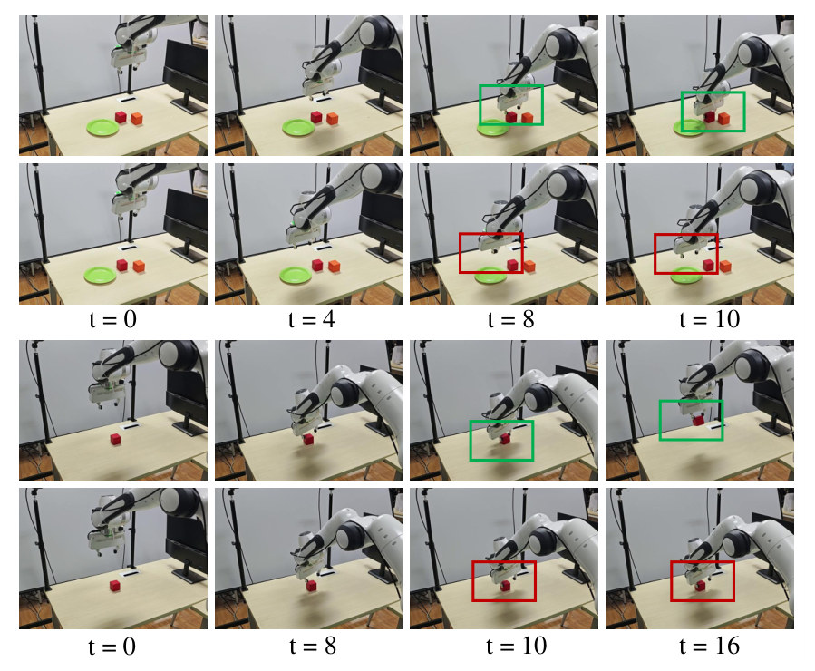
怎么读这张图
- 第 1 行（绿框，t = 8 / 10）：单技能训练的模型在绿盘 + 两个 block 的场景（Tab. 7 的 Objects in plate）里，t = 8 夹爪闭合夹住红块，t = 10 提起。
- 第 2 行（红框）：同一场景，混训多任务（含不需要闭合夹爪的 drawer 子任务）之后，t = 8 夹爪没闭合，t = 10 空抓——§4.3 说的 cross-task interference。本例的 pick 就是这种会被 open / turn 干扰的技能。
- 第 3 行（绿框）：π0.5 学新技能 open 之前，单个红块的短任务 t = 10 夹住、t = 16 提起。
- 第 4 行（红框）：学完 open 之后同一任务，夹爪到位后没有及时闭合（§4.3："failed to close promptly"），t = 16 仍空着——对应 Tab. 4 里 π0.5 旧任务平均 −15.0。
Related work
| 相关工作 | 解决什么 | 怎么解决 | 和本文的区别 |
|---|---|---|---|
| 同一问题 · 别的解法 | |||
| 单 decoder VLA，直接出动作 π0、π0.5、OpenVLA、Octo、SpatialVLA、CoT-VLA | 通用操作：看图读指令直接出动作 | VLM 微调成 VLA，一个 action decoder 吃全部数据，没有"做到哪一步"的中间变量 | 缺两样：没有 think（第几步、哪个技能），也没有 skill expert → 本文两样都加。π0.5 其实会先吐 subtask 文本，论文仍把它归在这组 |
| 两段式：VLM planner + 低层 policy SayCan、Plan-and-Act、CoPa、Hi Robot、Gemini Robotics | long-horizon 任务拆成 subgoal | 高层 VLM 出子指令，独立的 VLA 逐条执行 | 两个模型不共享 latent，指令过时、错位累积 → 本文 planner 和 policy 是同一个 VLM，[think] / [act] 自己切换 |
| 统一 Think-Act 的 VLA（本文所属的一路） Fast-in-Slow、Robix、OneTwoVLA、HybridVLA、InstructVLA、LoHoVLA | 两段式的脱节：把高层推理和动作放进同一个模型 | 同一个 VLM 交替输出文本推理（subtask / CoT）和动作 | 已有 think，只缺一样：推理结果只当条件，动作仍由一个 decoder 出 → 本文把 think 出的 atomic skill 接到 router 上选 expert，新技能按 expert 加 |
| 技能发现 / 持续学习 DexSkills、QueST、Lotus、M2Distill、Think-small-act-big | 从数据里自动分技能；学新技能不忘旧 | 无监督 skill segmentation、latent action 表示、不靠 replay | 技能藏在 latent 里，不对应独立参数 → 本文一 skill 一 expert，新技能只训新 expert + router 一路 |
| 相似做法 · 别的问题 | |||
| Mixture-of-Experts DeepSeekMoE / Mixtral（LLM）、DriveMoE / MoSE（驾驶）、MoDE / Mentor / ForceVLA（机器人） | 扩容量、处理长尾 / 异构数据 | 按 token 或去噪 timestep 把计算 route 到 expert，load balancing | expert 是可互换的槽位，没有语义 → 本文用 atomic skill 做 routing 信号，每个 expert = 一个可复用的 primitive |
来源：论文 §2 Related Work（2.1 VLA、2.2 Multimodal MoE、2.3 Continual Learning）和 §4.4 ablation 的对比，未另行检索。
Level 1 · Big picture
让 VLA 自己说出"现在是哪个 atomic skill"，再用这句话去选一个专属 expert 出动作
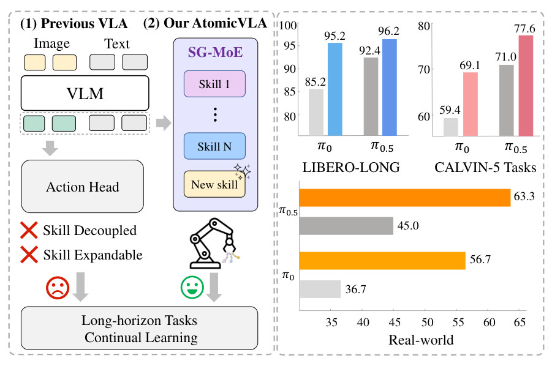
怎么读这张图
- 左半 (1) Previous VLA：Image + Text 进 VLM，一个 Action Head 出动作；下面两个 ✗——Skill Decoupled（技能没解耦）、Skill Expandable（不可扩展）。本例里 turn / pick / place 全挤在一个 head 里。
- 左半 (2) Our AtomicVLA：VLM 之后接 SG-MoE，Skill 1 … Skill N 各一个 expert，最下面带星号的 "New skill" = 加一个新 expert。本例：turn / pick / place 各一个 expert。
- 右上两张柱图：LIBERO-LONG 上 π0 85.2 → 95.2、π0.5 92.4 → 96.2；CALVIN 连做 5 个任务 59.4 → 69.1、71.0 → 77.6（灰 = baseline，彩色 = 换上 SG-MoE 的 AtomicVLA / AtomicVLA*）。
- 右下横条 Real-world：真机 3 个 long-horizon 任务的平均，π0 36.7 → 56.7（AtomicVLA）、π0.5 45.0 → 63.3（AtomicVLA*）。
flowchart LR I["Input
图像 + s_t + 指令
'Turn on the stove…'"] --> T["[think] 规划
[turn, pick, place]
step 1/3 · turn"] T --> R["SG-MoE 选 expert
turn → turn expert"]:::win R --> O["[act] 动作块
ΔT ΔR Grip × chunk
旋钮转到 ON"] O -.-> T
虚线：执行完一个 chunk 回到模式预测；只在子技能切换时再 think（step 2/3 · pick，step 3/3 · place），其余时刻直接 act。
Level 2 · Stages
5 个 stage：3 个在推理时循环，1 个加新技能，1 个造训练标签
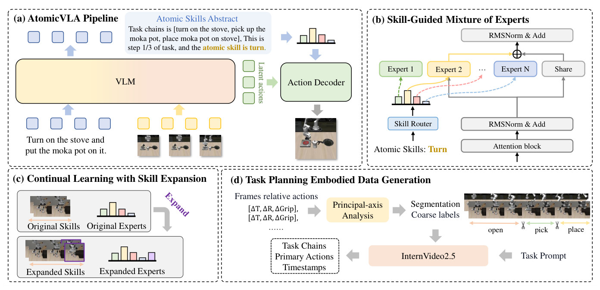
怎么读这张图
- (a) 左下：指令 "Turn on the stove and put the moka pot on it."（蓝色 token）和三帧图像（黄色 token）进 VLM。
- (a) 上方 "Atomic Skills Abstract"：VLM 的文本输出，就是本例的 think："Task chains is [turn on the stove, pick up the moka pot, place moka pot on stove], This is step 1/3 of task, and the atomic skill is turn."
- (a) 右侧：这句话里的 atomic skill 变成小柱状图（router 权重），和 VLM 出的绿色 "Latent actions" 一起进 Action Decoder → 机器人执行（图里机械臂正在转旋钮）。
- (b) Skill-Guided Mixture of Experts：底部 "Atomic Skills: Turn" 进 Skill Router，出一组权重（柱状图）；选中的 Expert 2（黄色实线，本例 = turn expert）和 Share expert 的输出在 ⊕ 相加，再 RMSNorm & Add。Expert 1 / Expert N 的虚线 = 没被选中的路径。
- (c) Continual Learning with Skill Expansion：Original Skills + Original Experts → Expand → Expanded Skills（紫框 = 新技能的片段）+ Expanded Experts（多出的紫柱 = 新 expert）。
- (d) Task Planning Embodied Data Generation：逐帧相对动作 [ΔT, ΔR, ΔGrip] → Principal-axis Analysis → Segmentation + Coarse labels（右侧时间轴用剪刀把 open / pick / place 切开）→ 连同 Task Prompt 给 InternVideo2.5 → 输出 Task Chains / Primary Actions / Timestamps。
flowchart TD S5["5 · Label data（训练前，离线）
demo 轨迹 → turn / pick / place 分段
+ task chain 文本标签"] --> S1["1 · Think
chain = [turn, pick, place]
step 1/3 · σ = turn"] S1 --> S2["2 · Route（SG-MoE）
turn → Z_σ → top-1 = turn expert"]:::win S2 --> S3["3 · Act
(1−w)·shared + w·turn expert
→ ΔT ΔR Grip → 执行"] S3 -.-> S1 S4["4 · Expand（学新技能）
+1 expert、router +1 路
只训这两处"]:::win --> S2 click S1 href "#stage-1" click S2 href "#stage-2" click S3 href "#stage-3" click S4 href "#stage-4" click S5 href "#stage-5"
点击 stage 展开 Level 3 细节。贯穿 2–4 的 skill library（shared expert + K 个 skill expert + router）见 Library。
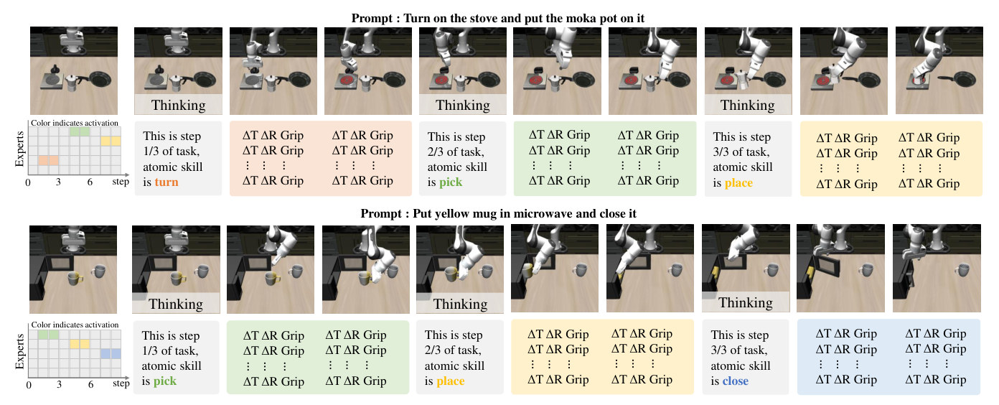
怎么读这张图 · 这就是 running example 的完整 trace
- 上排 "Prompt: Turn on the stove and put the moka pot on it"：第 1 帧后灰块 Thinking → "This is step 1/3 of task, atomic skill is turn"（橙）。
- 接着两格橙色块：每格是一个 action chunk，里面一列 ΔT ΔR Grip（平移、旋转、夹爪）——Stage 3 的输出，turn expert 在动。
- 旋钮转完再 Thinking："step 2/3 … pick"（绿）→ 绿色 chunk 抓 moka pot；再 Thinking "step 3/3 … place"（黄）→ 黄色 chunk 放到灶上。
- 最左 "Experts × step" 热图：纵轴 5 个 expert，横轴 step 0–9，着色格 = 被激活的 expert——turn、pick、place 各占一行，一次只亮一行 = top-1 routing。
- 下排 "Put yellow mug in microwave and close it"：同样 pick → place → close 三步，close 用蓝色的另一个 expert；两个任务的 pick / place 颜色相同 = 同一个 expert 跨任务复用。
Level 3 · Details
每个 stage 的细节
Stage 1 Think：规划 + 说出 atomic skill 图像 O_t + 指令 ℓ → 文本 [task chain C_0-k, 进度 C_t, atomic skill σ]
- Why：单 head VLA 没有"做到哪一步、在用哪个技能"的变量；两段式有，但在另一个模型里、和执行脱节。
- How：每个时刻先预测一个模式 token：[think] 或 [act]（Algorithm 1 第 3 行）。
- 模式 = [think]：生成文本 task chain C_0-k（整个任务的 atomic 子任务列表）、当前进度 C_t（第几步）、atomic skill abstraction σ（本步的技能词）。
- 只在关键时刻 think：任务开始、子技能切换（§3.2）；其余时刻直接 [act]，用最近一次 think 的 σ。
- 输出格式和训练标签一致（Fig. 7 的 Output Format）："The task chain is <…>, This is step x/N, <current atomic task>, and the atomic abstraction is <verb>"。
- 技能词表是手定的：LIBERO 5 个（Pick / Place / Open / Close / Turn），CALVIN 8 个（Rotate / Push / Move / Open&Close / Lift / Place / Turn / Stack），真机 5 个（Grasp / Stack / Close / Press / Open）（A.3.2、A.3.3）。
- 一次 think 104 ms（Tab. 10）。
符号表（Algorithm 1）
| 符号 | 是什么 | 例子里的值 |
|---|---|---|
| O_t^{1:n} | t 时刻 n 路相机的图像 | 灶台 + moka pot 的当前帧 |
| ℓ | 语言指令 | "Turn on the stove and put the moka pot on it" |
| M | 模式 token，[think] 或 [act] | t = 0 时 [think] |
| C_0-k | task chain：整个任务的 atomic 子任务列表 | [turn on the stove, pick up the moka pot, place moka pot on stove] |
| C_t | 当前进度，第几步 | step 1/3 |
| σ | atomic skill abstraction，本步的技能词 | turn |
| s_t | 本体状态（关节、夹爪） | 当前关节角 + 夹爪开 |
| A_t | action chunk，连续多步动作 | 一列 ΔT ΔR Grip |
flowchart LR o["O_t + ℓ
当前帧 + 指令"] --> m["预测模式 token M
t = 0 → [think]"] m --> th["thinking 输出文本
[turn on the stove,
pick up the moka pot,
place moka pot on stove]"] th --> s["σ = atomic skill
step 1/3 · turn"]:::win
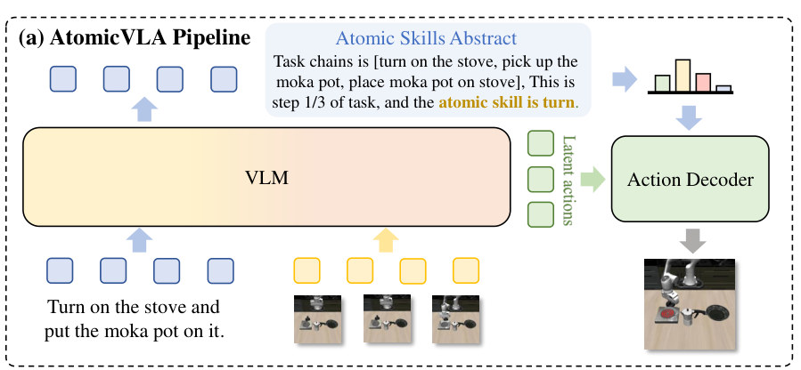
Running example 在这一步
t = 0：看到灶台关着、moka pot 在旁边，预测 [think]，输出 "Task chains is [turn on the stove, pick up the moka pot, place moka pot on stove], This is step 1/3 of task, and the atomic skill is turn"（Fig. 2a 原文）。旋钮转完后的下一次 think 输出 step 2/3 · pick；moka pot 抓起后再 think 输出 step 3/3 · place（Fig. 3 上排三个灰块）。
Stage 2 Route：atomic skill → 专属 expert（SG-MoE） 技能词 σ → 选中的 expert k 和权重 w_k
- Why：让每个 expert 只学一种 atomic skill，技能不互扰；routing 信号是语义（技能），不是 token 或去噪步。
- How：每个技能词固定对应一个标量 σ ∈ [0, 100]，借鉴 diffusion 的 noise scheduling（§3.3）；具体数值论文没给。
- Z_σ = E(norm(log σ))（Eq. 1）：取 log、归一化、过 embedding 函数 E 变成 d 维向量——固定映射，技能之间在 embedding 空间里分得开。
- w_k = Router(Z_σ)，k = 1…K（Eq. 2）：对 K 个 skill expert 的分布；稀疏激活，只取最高分的那个（top-1）。
- library = 1 个 shared expert（保留 π0 预训练的动作生成能力）+ K 个 skill expert + router（Fig. 2b）。
- expert 结构：Gemma 架构的 feed-forward（SwiGLU MLP），width 2048、mlp 4096、depth 18、8 heads，随机初始化（A.3.1）。
- Ablation（Tab. 5，LIBERO-LONG）：π0 85.2 → +MoE 88.6 → +MoDE 89.5 → +SG-MoE 95.2；MoE / MoDE 按 token / 去噪步 route，每个 expert 仍是技能混合体。
符号表（Eq. 1–3，Fig. 2b）
| 符号 | 是什么 | 例子里的值 |
|---|---|---|
| σ | 技能对应的噪声等级标量，0–100 | turn 的固定值（未给） |
| E(·) | 把归一化标量变成高维向量的 embedding 函数 | — |
| Z_σ | 技能 embedding，d 维 | Z_turn |
| K | skill expert 的个数 | LIBERO 5，CALVIN 8 |
| w_k | router 给 expert k 的分数 | turn expert 最高 |
| F_share / F_k | shared expert / 第 k 个 expert 的输出 | F_share、F_turn |
| x_t | 多模态输入 [O_t, s_t] | 当前帧 + 关节状态 |
flowchart LR a["atomic skill 词
turn"] --> b["标量 σ ∈ [0, 100]
turn 的固定噪声等级
（数值论文未给）"] b --> c["Z_σ = E(norm(log σ))
d 维 skill embedding"] c --> d["Router → top-1
5 个 expert 打分
→ turn expert，权重 w"]:::win
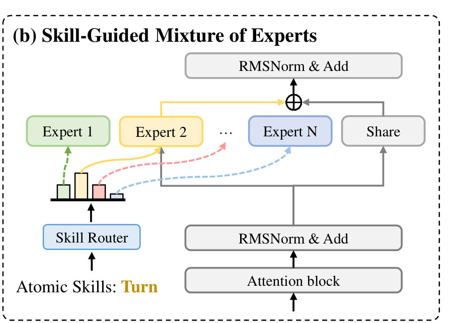
怎么读这张图
- 底部 Attention block → RMSNorm & Add：transformer 的注意力层；这一层的输出同时送去 Share expert 和各 skill expert。
- 左下 "Atomic Skills: Turn" → Skill Router：本例的 σ = turn 进 router，出一组柱状权重。
- Expert 1 / Expert 2 / … / Expert N：K 个 skill expert；黄色实线 = 被选中的 Expert 2（本例的 turn expert），绿 / 红 / 蓝虚线 = 没被选中的路径。
- ⊕ → RMSNorm & Add：Expert 2 的输出和 Share 的输出按 w 加权相加（Eq. 3），再残差归一化。
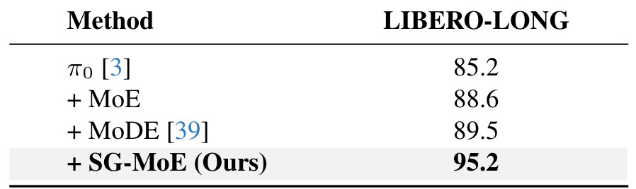
Running example 在这一步
σ = turn → Z_turn → router 给 5 个 expert 打分，turn expert 最高（Fig. 3 热图 step 0–3 只亮一行）；到 pick、place 时各自换一行，同一个 pick expert 在 "Put yellow mug in microwave" 里也被用到。
Stage 3 Act：shared + skill expert 出动作块，执行，循环 x_t = [O_t, s_t] + 选中的 expert → action chunk A_t → 执行 → 回到模式预测
- Why：既要 shared expert 的泛化（π0 预训练），又要 skill expert 的精度。
- How：F_out = (1 − w_k)·F_share(x_t) + w_k·F_k(x_t)（Eq. 3）：shared 和选中 expert 按 router 分数加权（Fig. 2b 的 ⊕）。
- Action decoder 从 VLM 的 latent action token 出一个 chunk：每行 ΔT ΔR Grip（平移、旋转、夹爪），就是 Fig. 3 的彩色块。
- 执行 A_t，t ← t + 1，回到模式预测（Algorithm 1 第 9–12 行）；下一次 [think] 看新观测，自己判断是否进入下一步。
- Error recovery（§4.2，Fig. 4）：抓到的 butter 掉了 → 下一次 think 发现进度没变 → 重新生成 atomic skill abstraction（还是 pick）→ 重做。CALVIN 评测不计恢复后的完成，所以 Tab. 2 可能低估（§4.2）。
- 推理延迟（Tab. 10）：act 92 ms（K = 5）、126 ms（K = 8）、160 ms（K = 12）；π0 71 ms。
flowchart LR a["x_t = [O_t, s_t]
当前帧 + 本体状态"] --> b["shared + turn expert
(1−w)·F_share
+ w·F_turn"]:::win b --> c["action chunk A_t
ΔT ΔR Grip × 多步"] c --> d["执行，t + 1
旋钮转到 ON
→ 下次 think: step 2/3 pick"]
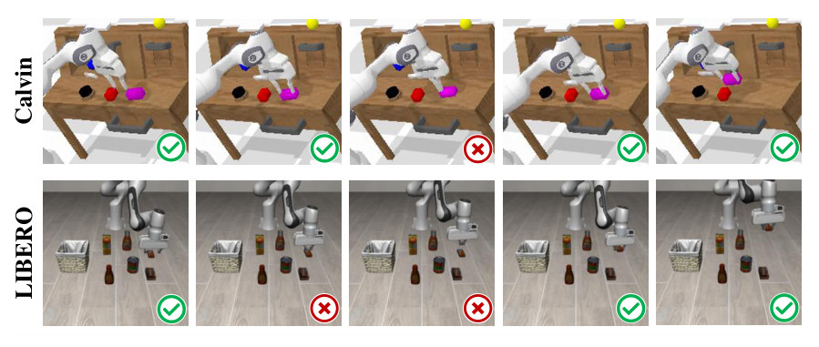
怎么读这张图
- 上排 Calvin：第 1、2 帧 ✓，第 3 帧 ✗——粉色块没有抓住；第 4、5 帧 ✓——下一次 think 仍是同一个 atomic skill，重新抓起并完成。
- 下排 LIBERO：第 1 帧 ✓，第 2、3 帧 ✗——瓶子没夹住（§4.2 文字里的例子是 butter 抓起后掉落）；第 4、5 帧 ✓——再次抓取成功。
Running example 在这一步
step 1/3 turn：turn expert 和 shared expert 加权出 chunk，旋钮转到 ON（Fig. 3 两格橙色块）；执行完回到模式预测，看到旋钮已开 → think：step 2/3 · pick。若 pick 时 moka pot 滑掉，下一次 think 仍输出 step 2/3 · pick，重抓——机制同 Fig. 4，本例的失手过程论文没有展示（推断）。
Stage 4 Expand：学新技能 = 加一个 expert + router 一路 新技能（open）的演示 → K + 1 个 expert 的 library，旧 expert 不动
- Why：全模型微调学新技能 → 旧技能遗忘（π0.5 旧 4 任务平均 −15.0，Tab. 4）。
- How：新技能分到一个新的 σ / Z_σ；加一个新 expert 模块；router 多一路输出（§3.4）。
- 初始化：扩展后的 router 从原 router 复制权重，新的一路用小随机数。
- 只训新 expert + 对应的 router 参数，其余冻结 → 旧技能 "largely unaffected"。
- 真机实验（§4.3，A.3.4）：4 个短任务混训 20k 步 → 加 "open the top drawer"，微调 7k 步，lr 5e-6，每任务 20 次验证。
- 结果（Tab. 4）：π0.5 旧 4 任务 77.5 → 61（−15.0，Stack 65 → 45）；AtomicVLA* 86.3 → 82（−1.3）；新技能 open 70 vs π0.5 的 55；5 任务平均高 21。
flowchart LR a["原 library
真机 4 个 expert
grasp / stack /
close / press"] --> b["+1 expert, router +1 路
新 expert 随机初始化
router 复制旧权重"]:::win b --> c["只训新 expert + 新路
7k 步，lr 5e-6"] c --> d["旧技能不动
旧 4 任务 86.3→82
π0.5 全微调 77.5→61"]
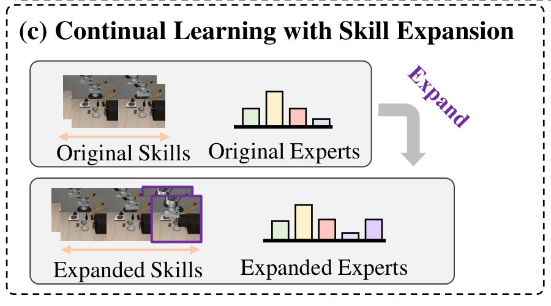
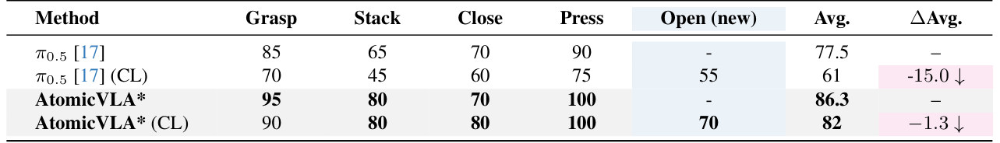
Running example 在这一步
本例的 LIBERO library 本来就有 turn / pick / place / open / close。把论文的真机实验搬到本例上（推断）：假如一开始只有 pick / place / open / close 四个 expert，要新加 turn——加一个 turn expert 和 router 的第 5 路，只用 turn 的演示训这两处，pick / place expert 原封不动，所以 moka pot 的 pick / place 不会退化。论文真机实验里新加的是 open（Tab. 4）。
Stage 5 Label data：从演示轨迹自动造 think 标签 原始演示（视频 + 末端轨迹 + 指令）→ 每段的 task chain / step x/N / atomic verb
- Why：Stage 1 的 think 需要文本监督；人工标 atomic action 既贵又模糊，纯 VLM 或光流分段噪声大（§3.5）。
- How：把末端轨迹按短 chunk 看 (Δx, Δy, Δz, Δroll, Δpitch, Δyaw, 夹爪)：比较平移 / 旋转幅度找主导运动模式（principal-axis analysis），夹爪开合定语义边界。
- 阈值（A.3.5）：平移 3 cm、旋转 0.05 rad、夹爪变化 0.1，看连续 5 帧。
- 规则例（§3.5）：z 持续下降 + 夹爪闭合 → pick；平移小、旋转大、夹爪闭合 → turn。
- 粗标签 + 时间戳的片段 → InternVideo2.5 看片段（每 3 帧采样）+ 指令 + 粗标签，输出 task chain、当前 step、atomic action；粗标签错了可以改（Fig. 7）。
- LIBERO 的技能分布（Tab. 6）：Pick 2462、Place 761、Open 201、Close 152、Turn 175；训练时提高 Open / Close / Turn 的采样频率（A.3.2）。
flowchart LR a["demo 轨迹
每帧 ΔT、ΔR、夹爪"] --> b["principal-axis 分段
旋转主导+夹爪闭 → turn
z 下降+夹爪闭 → pick"] b --> c["InternVideo2.5
片段 + 指令 + 粗标签"] c --> d["think 标签
chain + step 1/3 + turn"]:::win
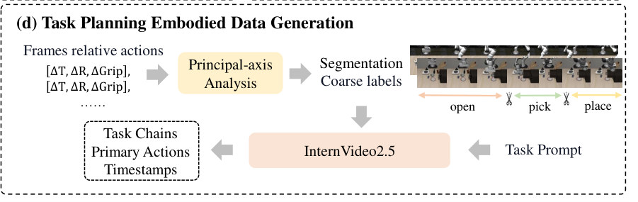
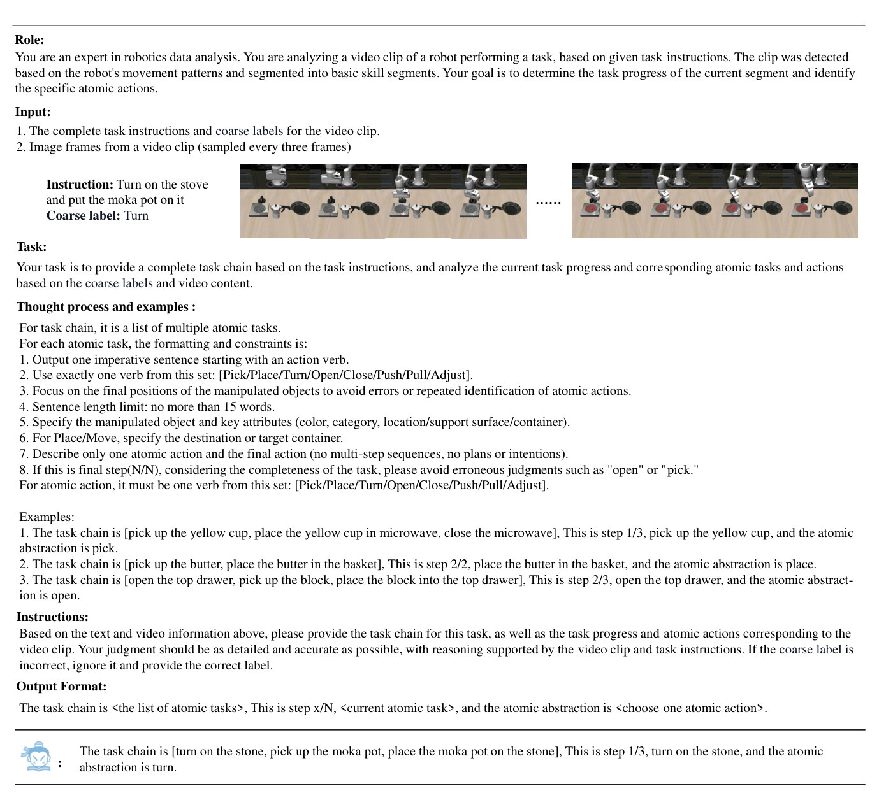
怎么读这张图
- Role / Input：告诉模型它看的是"已按运动模式切好的技能片段"；输入 = 完整指令 + 粗标签 + 每 3 帧采样的图像。示例正是本例：Instruction "Turn on the stove and put the moka pot on it"，Coarse label "Turn"。
- Task / Thought process：task chain 是 atomic 子任务列表，每条一个动词，动词只能从 [Pick / Place / Turn / Open / Close / Push / Pull / Adjust] 里选，不超过 15 词，要写明物体属性和目标容器。
- Examples：三条示例输出（yellow cup → microwave；butter → basket；top drawer → block）。
- Output Format 和最后一行模型回答："The task chain is [turn on the stone, pick up the moka pot, place the moka pot on the stone], This is step 1/3, turn on the stone, and the atomic abstraction is turn."（原文如此，stove 印成了 stone）。
Running example 在这一步
moka pot 的一条演示 → 轨迹切成三段（旋转主导 + 夹爪闭 = turn；z 下降 + 夹爪闭 = pick；之后的 = place）各带时间戳 → InternVideo2.5 给每段写 "task chain + step x/3 + verb" → 训练时 VLM 学会在段首输出这段文字（[think]），段内输出 [act]。
Library · 贯穿 Stage 2–4 Atomic skill library：shared expert + K 个 skill expert + router 建在 π0（AtomicVLA）或 π0.5（AtomicVLA*）上
- 组成：1 个 shared expert（π0 的动作生成能力）+ K 个 skill expert（随机初始化）+ skill router；K = 5（LIBERO、真机）、8（CALVIN）。
- 两个版本：AtomicVLA 建在 π0 上，AtomicVLA* 建在 π0.5 上；每张表里要和对应的 base 比。
- 训练（A.3.1）：8 × H200，LIBERO / CALVIN 100k 步，真机 30k 步，batch 64；AdamW，cosine lr 2.5e-5 → 5e-6，warmup 1k 步，EMA 0.999。数据按 LeRobot 格式。
- 真机（A.3.3）：Franka Research 3 + 两路 RealSense D435i（手腕 + 对面），Gello 遥操采数据；long-horizon 每任务 100 条、短任务 50 条，共 550 条；每任务测 20 次。
- 规模与延迟（Tab. 10）：π0 3.24B → K = 5 4.17B、K = 8 4.81B、K = 12 5.65B；act 71 → 92 / 126 / 160 ms，think 104 ms。A.4 说是单卡 H20，A.3.1 说推理用 RTX PRO 6000，论文前后不一致。
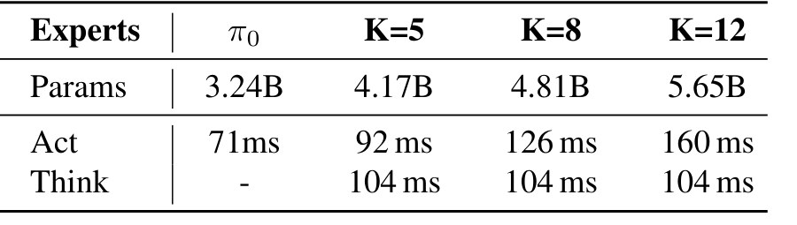
Recap：例子覆盖了论文的哪些 idea
| 论文里的 idea | 例子里在哪体现 |
|---|---|
| [think] / [act] 自适应切换（§3.2，Algorithm 1） | Stage 1：t = 0 think，旋钮转完再 think；中间全是 act |
| task chain + 进度 + atomic skill 的文本规划 | Stage 1：[turn, pick, place]、step 1/3、turn |
| 技能 → 固定 embedding Z_σ（Eq. 1） | Stage 2：turn → σ → Z_turn |
| top-1 skill router（Eq. 2） | Stage 2：turn expert 最高分；Fig. 3 热图一次一行 |
| shared + skill expert 加权（Eq. 3） | Stage 3：(1−w)·F_share + w·F_turn → ΔT ΔR Grip |
| 技能跨任务复用 | Level 2 Fig. 3：pick / place 在 moka pot 和 yellow mug 任务里同色 |
| Error recovery（§4.2，Fig. 4） | Stage 3：失手后下一次 think 仍是 pick，重做 |
| Skill expansion：新 expert + router 一路（§3.4） | Stage 4：加 turn（推断）/ 论文加 open，旧任务 −1.3 |
| principal-axis + InternVideo2.5 标注（§3.5） | Stage 5：moka pot 演示切成 turn / pick / place 三段 + 文本 |
| 主结果 | Results：LIBERO-LONG 85.2 → 95.2，真机 +20.0 / +18.3，CL −1.3 vs −15.0 |
Results
结果一览
- LIBERO 平均 96.6 / 97.8（AtomicVLA / AtomicVLA*）vs π0 94.2、π0.5 96.9；LIBERO-LONG 95.2 vs π0 85.2（+10），96.2 vs π0.5 92.4（Tab. 1，每任务测 50 次）。
- CALVIN ABC→D avg len 4.09 / 4.27 vs π0 3.87、π0.5 4.02；连做 5 个任务 69.1 vs 59.4、77.6 vs 71.0（Tab. 2）。后三段相对 π0.5 提升 5.8 / 6.2 / 6.6。Push-right 类任务只有 22–34%（Tab. 9），作者归因于评测时块放在右侧的分布偏移。
- 真机 long-horizon 平均 56.7 / 63.3 vs π0 36.7、π0.5 45（+20.0 / +18.3，Tab. 3）；Object into microwave 10 → 45、35 → 55。
- Continual learning −1.3 vs −15.0：学 open 后旧 4 任务的平均变化；open 本身 70 vs 55（Tab. 4）。
- Ablation 95.2 vs 88.6 / 89.5：SG-MoE vs token-MoE / MoDE（LIBERO-LONG，Tab. 5）。
- 复杂场景 43.3 vs 33.3（Tab. 8）：抓颜色和桌面接近的 corn 时能多次修正，+15。
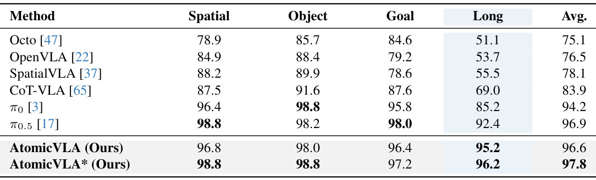
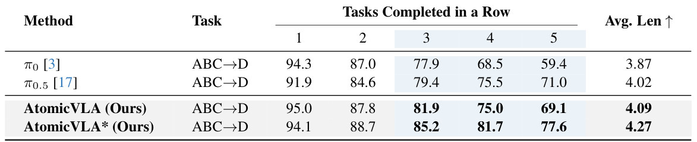
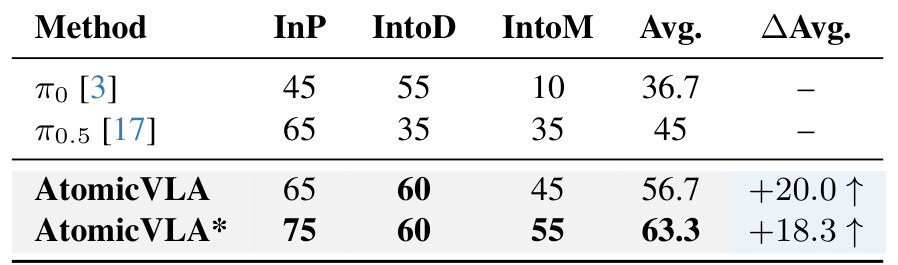
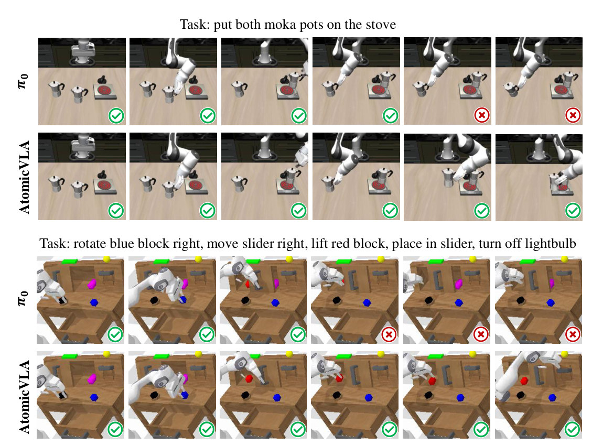
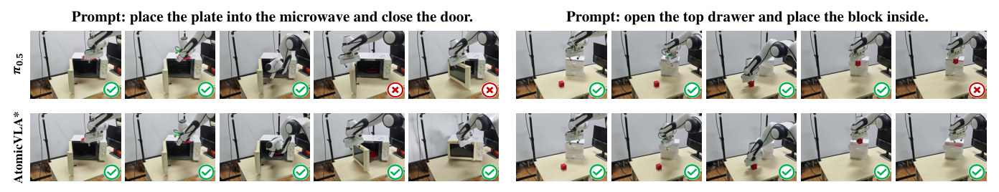
Limits
局限和开放问题
- 技能词表是手定的（LIBERO 5 个、CALVIN 8 个），每个技能只是一个标量 σ；新技能必须由人定义并提供演示（A.2：仍靠 IL，需要大量人类示范，作者把 RL 列为后续）。
- think 的质量依赖 VLM 的规划能力（A.2）；planner 说错技能，router 就选错 expert，论文没有报告 think 的错误率。
- top-1 routing：一步只能用一个 skill expert；复合动作要先拆成 atomic。
- 分布偏移时 expert 并不更鲁棒：CALVIN 的 push-right 只有 22–34%（Tab. 9）。
- 真机只有 Franka 单臂、每任务 20 次评测；continual learning 只试了"加 1 个技能"，没有长序列的持续学习。
- 开销：每加 expert 参数增加（K = 12 时 5.65B），act 延迟从 71 ms 到 92–160 ms（Tab. 10）。
AtomicVLA vs RPent
同一件事的两种做法：skill expert 收进模型里，还是 harness 放在模型外
RPent 指库里 Robotic-harness 的 Harness VLA（arXiv 2607.08448v5）：冻结的 VLA 被包成可重试的 primitive VLA_ACT，由 Claude Code / Codex planner 和 6 个 analytic primitive 组合。下面把 running example 分别交给两者（RPent 这一条是按它的机制推断的，论文没跑这个任务）。
flowchart TD HA["AtomicVLA
规划和 primitive 都在权重里"] --> A1["[think]
chain = [turn, pick, place]
step 1/3 · turn"] A1 --> A2["turn expert 出 chunk
旋钮转到 ON"] A2 --> A3["[think] → pick expert
抓 moka pot"] A3 --> A4["[think] → place expert
放到灶上"] HB["RPent
规划在模型外，VLA 只做接触"] --> B1["Planner（Claude Code）
读 memory + RGB-D
定位旋钮和 moka pot"] B1 --> B2["MOVE_TO staging
把夹爪送到旋钮旁"] B2 --> B3["VLA_ACT
prompt 'turn on the stove'
冻结 VLA 短促接触"] B3 --> B4["检查 → 重试
旋钮没动？退回再调"] B4 --> B5["VLA_ACT 抓 → MOVE_TO → RELEASE
查 success signal 才收尾"]
| 维度 | AtomicVLA | RPent（Harness VLA） |
|---|---|---|
| 规划在哪 | VLM 里的 [think] token，一次 104 ms（Tab. 10） | 模型外的 coding agent（Claude Code / Codex）；Codex 高推理每 episode 平均 529 s planner 时间（它的 Table 7） |
| primitive 是什么 | skill expert：模型里的一组权重，按 skill 词 route（turn / pick / place） | VLA_ACT：冻结 VLA 的短促调用 {prompt, max_chunks, stop}，加 6 个 analytic primitive（MOVE_TO、RELEASE…） |
| 谁出动作 | 全部由 shared + skill expert 出 action chunk | 接触交给 VLA；定位、搬运、松手交给解析 primitive（LIBERO 上 MOVE_TO 占调用 61.8%，VLA_ACT 15.8%） |
| 训不训 | 训：VLM + experts，100k 步、8 × H200；新技能再训 7k 步 | VLA 冻结不训；学的是 memory：seed 0 上探索出的 trace 和规则 |
| 加新技能 | 加一个 expert + router 一路，旧 expert 不动 | 词表固定，planner 不能发明 primitive；新任务 = 新的编排 + memory，或换 VLA_ACT 的 prompt |
| 失败恢复 | 隐式：下一次 think 看到进度没变，再出同一个 skill（Fig. 4） | 显式：夹爪合上而物体不动 = empty grasp → 重新定位、staging、再调 VLA_ACT；查 benchmark signal 才收尾 |
| 针对的问题 | long-horizon 分步、技能互扰、持续学习 | 部署扰动：改目标（T）、换位置（S），即 LIBERO-Pro |
| 可比的数字 | 标准 LIBERO 96.6 / 97.8（Tab. 1），LIBERO-LONG 95.2 / 96.2；没测 LIBERO-Pro | 标准 LIBERO 96.0，同一 VLA 直接跑 95.3（它的 Table 2）；LIBERO-Pro 50.0 → 82.4（Table 3）；没测 CALVIN 和持续学习 |
| 可审计性 | 能读 think 文本，不能干预 expert 内部 | 每一步是 JSON 命令和文件，可审计、可改词表 |
一句话：AtomicVLA 把"planner + 可重试 primitive"收进权重，换来毫秒级推理和端到端训练；RPent 把它放在模型外，换来不训练、可审计和对部署扰动的鲁棒。 叠加的可能：AtomicVLA 可以当 RPent 的 VLA_ACT 后端，think 出的 skill 词正好对上 VLA_ACT 的 prompt（推断，两篇都没做）。
For Atom-Action
对我们有什么用
- RPent（Harness VLA）把冻结 VLA 包成可重试的 VLA_ACT primitive、由 Claude Code / Codex planner 组合；AtomicVLA 是同一思路的"模型内版"：planner = [think]，primitive = skill expert，重试 = 下一次 think。值得对比：harness 的 planner 在 LIBERO-Pro 上重试 vs AtomicVLA 的自恢复。
- §3.5 的标注流水线（principal-axis 分段 + InternVideo2.5 写 task chain / step / verb）可以直接拿来给 RoboTwin / LIBERO 演示打 atomic 标签，作为 harness skill library 的 primitive 词表。
- "新技能 = 新 expert + router 一路，只训这两处"对应 harness 里"往 skill library 加一个 tool"；两边都没回答技能词表从哪来——可以试让 planner 从失败 trace 里提议新的 atomic skill。